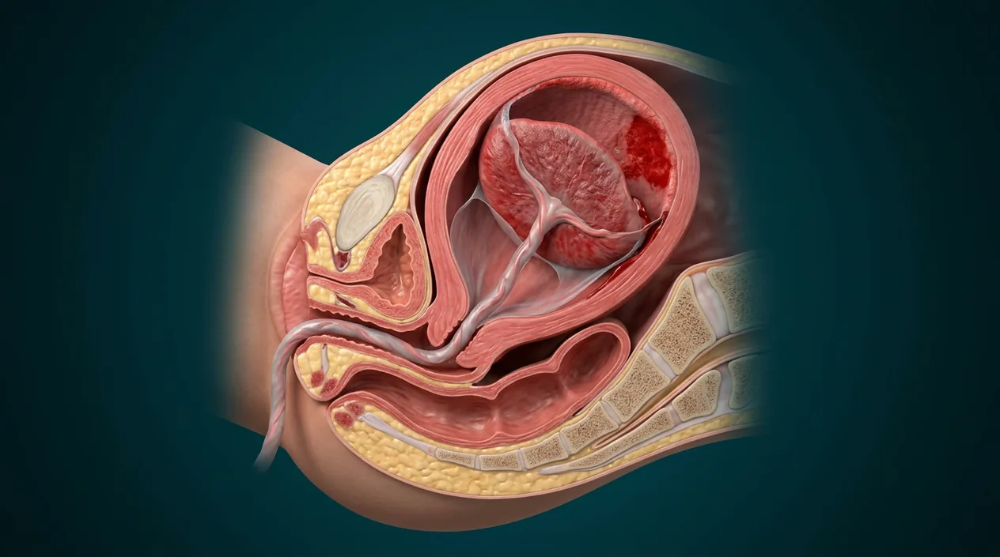

ORGAN → UNDER THE LENS
Chorionic villus · blood compartments
Tap to compare the organ region with a tissue-level teaching illustration.
Read about Maternal blood spaces ↓Study uterine contraction, maternal placental bed, cord, membranes, placenta delivery and postpartum bleeding anatomy.

Uterine retractionMaternal uterine vesselsUterine toneUterine myometriumPlacental separationAmnion and chorion membranesUmbilical veinUmbilical cordPlacenta deliveryTwo umbilical arteriesPostpartum bleedingFetal placental surfacePlacenta before separationMaternal blood spacesPlacental cotyledonsMaternal placental surfaceDecidual separation planeThe third stage begins immediately after the baby is born and ends when placenta and membranes are delivered. Uterine contraction reduces the attachment area and compresses maternal vessels to limit bleeding. The NEW post-birth teaching cutaway depicts a partially detaching placenta with an empty uterus; it is NOT a patient image or a photograph of a completely delivered placenta. A second older image separately shows the organ still attached during pregnancy and a third digital image depicts its villous exchange barrier BEFORE delivery. Clinicians assess completion and bleeding in real patients; heavy bleeding after birth is an emergency.
These are educational cutaways, not literal magnifications of an organ pixel or laboratory slides. A ring marks the approximate tissue region; part-specific lines appear only where identifiable.
Tap to compare the organ region with a tissue-level teaching illustration.
Read about Maternal blood spaces ↓Sperm and egg are separate branches before fertilization. Obstetric gestational weeks are usually counted from the last menstrual period, roughly two weeks before conception. Digital labor-stage illustrations model separate moments, not clinical birth photographs or patient measurements.
Tap an image to enlarge and tap again to close. These are digital educational models, not microscope photos, measured ultrasounds, clinical birth images or exact developmental clocks.
Digital post-birth uterine cutaway with partly detached placenta; not a picture of completed delivery or patient bleeding.
Different earlier pregnancy state; fetal villi and maternal blood spaces shown as reference.
Digital microscopic-scale villus model, not a blood-loss measurement or a delivery photograph.
These 17 structures describe anatomy related to the chapter’s regional illustration. Each entry separates location, function and a clinical point.
Before delivery, fetal chorionic plate and maternal basal plate form a joined organ.
What it doesMaintains exchange until birth.
Clinical connectionThe displayed image shows attachment, not detachment.
Picture context Digital post-birth uterine cutaway with partly detached placenta; not a picture of completed delivery or patient bleeding.
Muscular uterine wall contracts after birth.
What it doesReduces uterine size and aids vessel compression.
Clinical connectionUterine tone is assessed by clinical staff, not visually on this image.
Picture context Digital post-birth uterine cutaway with partly detached placenta; not a picture of completed delivery or patient bleeding.
Muscle fibers shorten and remain relatively contracted between contractions after birth.
What it doesHelps shrink placental attachment site.
Clinical connectionThis is a physiologic concept, not motion shown in a still.
Picture context Digital post-birth uterine cutaway with partly detached placenta; not a picture of completed delivery or patient bleeding.
Placental separation typically occurs at maternal decidual tissue interface.
What it doesAllows placenta to detach from uterine wall.
Clinical connectionPlacenta accreta spectrum is a different pathologic attachment condition.
Picture context Digital post-birth uterine cutaway with partly detached placenta; not a picture of completed delivery or patient bleeding.
Intervillous maternal blood spaces existed around fetal villi before birth.
What it doesExplain why bleeding at separation needs hemostasis.
Clinical connectionCannot estimate blood loss from stylized red coloring.
Picture context Digital microscopic-scale villus model, not a blood-loss measurement or a delivery photograph.
Maternal vessels supplied the placental bed during pregnancy.
What it doesRequire mechanical compression and hemostatic processes after detachment.
Clinical connectionHeavy bleeding after birth needs urgent professional care.
Picture context Digital microscopic-scale villus model, not a blood-loss measurement or a delivery photograph.
Placenta detaches from uterine lining following baby’s birth.
What it doesEnables its delivery.
Clinical connectionImage does not show an actual moment of detachment.
Picture context Digital post-birth uterine cutaway with partly detached placenta; not a picture of completed delivery or patient bleeding.
Placenta passes from uterus through cervix and vagina after infant birth.
What it doesCompletes the third labor stage.
Clinical connectionA retained placenta requires clinical evaluation.
Picture context Digital post-birth uterine cutaway with partly detached placenta; not a picture of completed delivery or patient bleeding.
Fetal membranes accompany placenta when delivered.
What it doesComplete removal ends fetal membrane occupancy of uterus.
Clinical connectionFragments need clinician assessment rather than inference from art.
Picture context Digital post-birth uterine cutaway with partly detached placenta; not a picture of completed delivery or patient bleeding.
Connects newborn side of placenta to fetal vessels until birth-related transition.
What it doesProvides placental fetal circulation during pregnancy.
Clinical connectionCord management is a clinical choice, not an instruction from this chapter.
Picture context Digital post-birth uterine cutaway with partly detached placenta; not a picture of completed delivery or patient bleeding.
Usually two arteries course through cord on fetal side.
What it doesFormerly carried blood toward placenta.
Clinical connectionThis drawing cannot determine vessel count for a particular newborn.
Picture context Digital post-birth uterine cutaway with partly detached placenta; not a picture of completed delivery or patient bleeding.
Usually single vein carries blood from placenta toward fetus before birth.
What it doesDelivers placental return in pregnancy.
Clinical connectionVessel direction differs from maternal venous drainage.
Picture context Digital post-birth uterine cutaway with partly detached placenta; not a picture of completed delivery or patient bleeding.
Amnion covers fetal-facing chorionic plate and cord insertion.
What it doesProvides anatomy for postpartum examination.
Clinical connectionA diagram cannot establish completeness of actual delivery.
Picture context Digital post-birth uterine cutaway with partly detached placenta; not a picture of completed delivery or patient bleeding.
Decidual-facing surface includes separated maternal tissue and placental lobules.
What it doesForms former uterine attachment interface.
Clinical connectionRoutine examination is clinical, not a digital-image diagnosis.
Picture context Digital post-birth uterine cutaway with partly detached placenta; not a picture of completed delivery or patient bleeding.
Gross lobular units are visible on delivered maternal placental face.
What it doesHelp clinicians assess organ integrity.
Clinical connectionBranching villi in this cross-section are not a photo of delivered cotyledons.
Picture context Digital post-birth uterine cutaway with partly detached placenta; not a picture of completed delivery or patient bleeding.
Postpartum uterine contraction compresses placental-bed vessels.
What it doesLimits bleeding after placental separation.
Clinical connectionWeak tone and hemorrhage require prompt professional response.
Picture context Digital post-birth uterine cutaway with partly detached placenta; not a picture of completed delivery or patient bleeding.
Some bleeding follows placental separation, but abnormal heavy bleeding is dangerous.
What it doesMakes placental-bed hemostasis clinically important.
Clinical connectionThis is not a bleeding-volume guide or home treatment protocol.
Picture context Digital post-birth uterine cutaway with partly detached placenta; not a picture of completed delivery or patient bleeding.
These 3 anatomy and development entries explain each stage without placing false pointers on an illustrative context plate.
Third stage starts once the newborn has been delivered.
What it doesSeparates baby delivery from placental delivery.
Clinical connectionSecond and third stages are not the same event.
Picture context Digital post-birth uterine cutaway with partly detached placenta; not a picture of completed delivery or patient bleeding.
After placenta and membranes are delivered, third stage ends and postpartum recovery follows.
What it doesMarks transition to postnatal assessment.
Clinical connectionPostpartum monitoring extends beyond this anatomical stage.
Picture context Digital post-birth uterine cutaway with partly detached placenta; not a picture of completed delivery or patient bleeding.
Placental location, cord insertion and labor course vary between pregnancies.
What it doesPrevents treating one diagram as a universal delivery plan.
Clinical connectionAny individual obstetric concern requires qualified care.
Picture context Digital post-birth uterine cutaway with partly detached placenta; not a picture of completed delivery or patient bleeding.
Short answers grounded in the structures described above. Use the illustrated guide for anatomical context.
It begins after the baby is born and ends when the placenta and fetal membranes are delivered. Postpartum monitoring continues after that stage.
Uterine contraction shrinks the placental attachment area, supports separation and compresses maternal blood vessels to limit bleeding. Actual uterine tone must be assessed clinically.
A fetal-facing surface is covered by amnion and joined to the cord, while a maternal-facing surface reflects its attachment to uterine decidual tissue. Examination of a delivered placenta is a clinical task.
The new third-stage digital image models an empty uterus after birth with a partly separating placenta, not a completed placental delivery. A second image depicts an attached placenta during pregnancy, and a third digital microscopic-scale cutaway shows a chorionic villus before delivery. None is a real patient photograph.
No. Heavy postpartum bleeding can be an emergency needing urgent professional evaluation. The image cannot measure blood loss, diagnose retained placenta or guide treatment.
Follow these connected structures and body systems in the illustrated atlas.
 Labor stage 2 · birth of babySeparate second-stage birth chapter: full dilation, fetal descent, rotation and delivery of the baby.↗
Labor stage 2 · birth of babySeparate second-stage birth chapter: full dilation, fetal descent, rotation and delivery of the baby.↗ Uterus — layers & cavityThe womb in cross-section: endometrium, junctional zone, myometrium, cavity, isthmus and the key clinical boundaries.↗
Uterus — layers & cavityThe womb in cross-section: endometrium, junctional zone, myometrium, cavity, isthmus and the key clinical boundaries.↗ Female pelvis & perineumThe female pelvic floor in sagittal section: bladder and urethra, vagina and anteverted uterus, rectum behind — plus the ligaments and pouches that position them.↗
Female pelvis & perineumThe female pelvic floor in sagittal section: bladder and urethra, vagina and anteverted uterus, rectum behind — plus the ligaments and pouches that position them.↗General anatomy references and related source chapters for continued study. These links do not make the digital illustrations clinical images or certify every anatomical variant.
This educational page is not medical advice and has not undergone formal clinical peer review. Spotted an error? Contact the editor.
Open the regional digital plate, study entries and a short self-test. Visible markers occur only for identifiable sperm and oocyte structures.